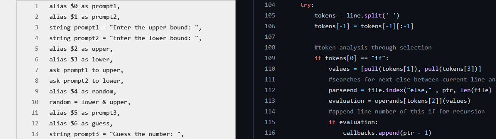

INTERPRETER
A custom programming language, with a Python interpreter
View source code here
During my first year studying GCSE Computer Science in 2018-2019, I began learning about translators - compilers, interpreters, and assemblers, as well as the algorithmic approaches to converting and representing programs as syntax trees.
In the summer of 2019, I had work experience at HSBC in Canary Wharf, London, and during my brief time here I was given a first-hand view into the world of real software development. This exposed me to the technical side - I sat and shadowed some full stack developers and learned from them about version control technology such as Git - but also exposed me to the rest of the demands of the career. I participated in Agile Scrum ceremonies and contributed in a sprint planning meeting, and assisted in product demos alongside the BA, product owner, and stakeholders.
Just after I finished my work experience, I developed this project: a custom programming language based on Assembly, with features such as:
- Direct addressing of memory locations held in a list
- Primitive variable naming, done by matching names to locations in a dictionary
- Selection through use of if-else statements
- Full suite of arithmetic and logical operands
After learning more about translators, lexers and parsers over my A-Level, university, and private studies, I would approach this project very differently now! It's still a reminder of how much I have learned as a programmer over the last few years.